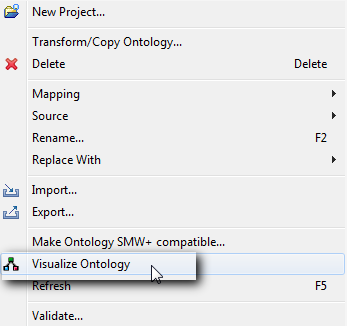
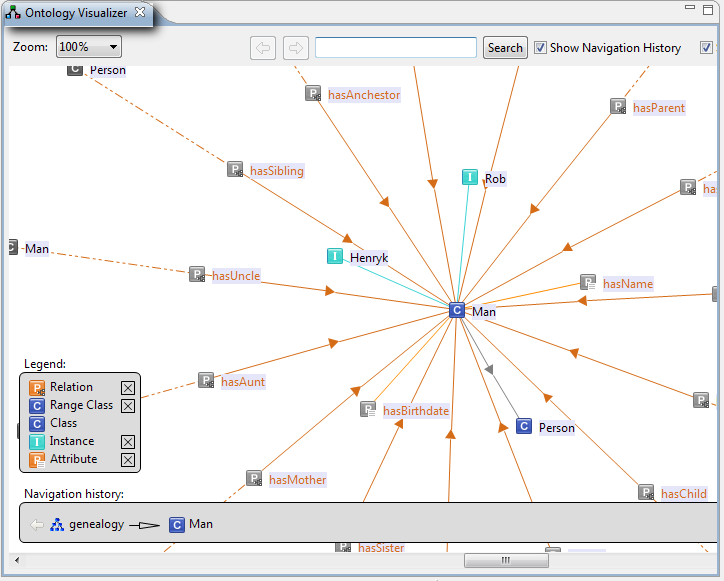

You can display the ontology and all of the elements of the hierarchy (classes, properties, instances) in a graph.
| 1. | Select Visualize Ontology from the context menu of an ontology element or select Show in Visualizer from the context menu for a class element. |

The Ontology Visualizer appears (only available for ObjectLogic):

The ontology and all elements of the hierarchy (classes, properties) are displayed in a graph. Classes, instances and inheritance hierarchy are displayed in a directed graph. Properties are displayed in a directed graph. A zoom function and a rotate function are available. The layout of the graph is optimized automatically. Left-clicking on an element in the Ontology Visualizer will refresh the visualization rendering and the clicked element will become its centre.
The colours of the arrows of graph elements have the following meaning:
| • | Grey arrows: Represent the connection between superclasses and subclasses or between a superclass and an ontology root. |
| • | Orange arrows: Represent the connection between classes and properties. |
| • | Red arrows: Represent the connection between classes and relations. |
| 2. | To append all of the connections of an element to the current visualization without shifting the focus to this element, right-click on an element. |
| 3. | To enable or disable different ontology entities, flag the appropriate check boxes in the legend which is on the left hand side of the view. |
| 4. | To zoom in or out, you have the following alternatives: |
| • | Change the zoom value in the selection box or |
| • | Press "Ctrl & +" to zoom in and "Ctrl & -" to zoom out. |
| • | Use the mouse wheel while holding Ctrl pressed |